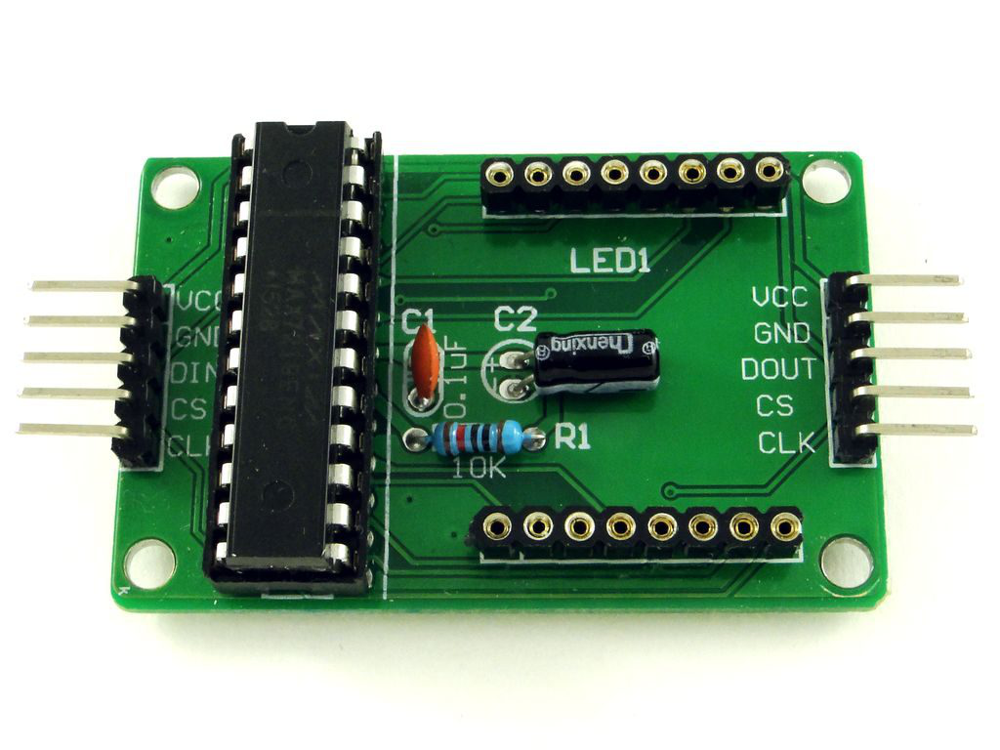
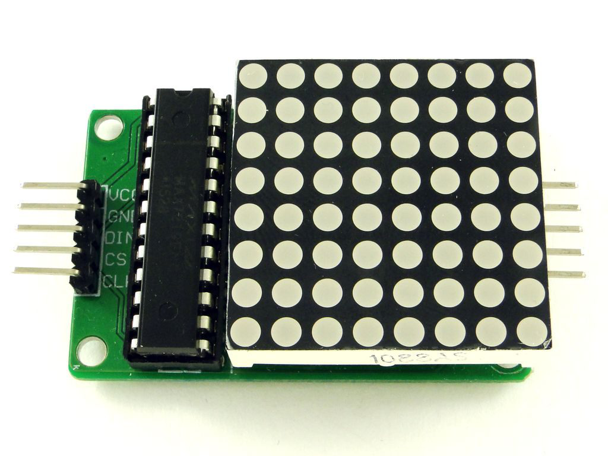
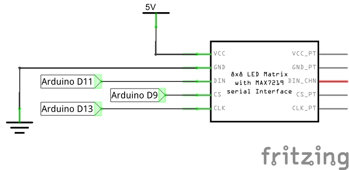
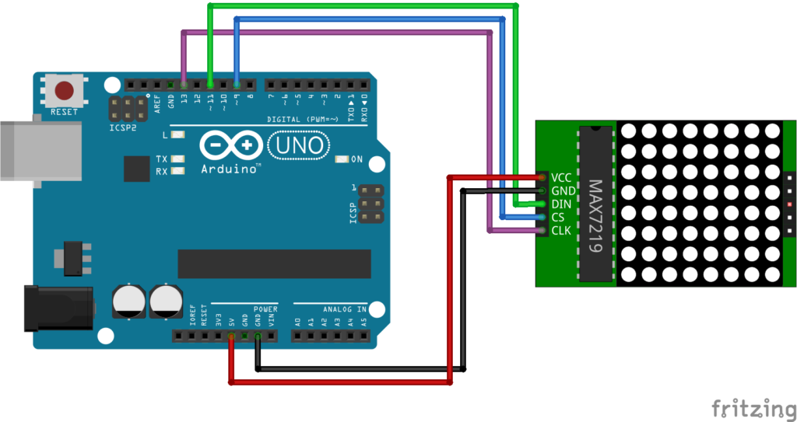
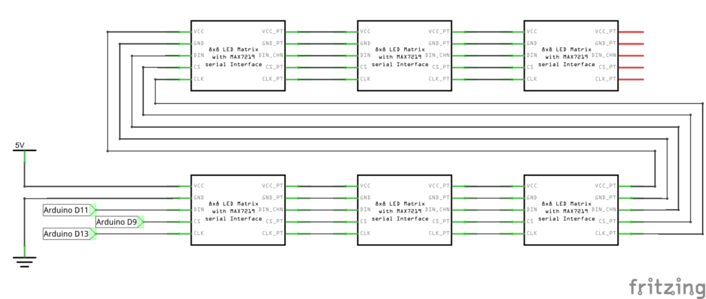
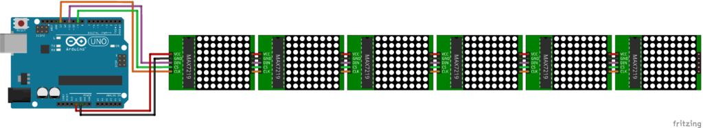
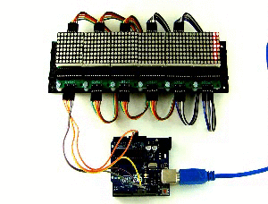

Ардуино: светодиодная матрица с драйвером max7219
Светодиодная матрица — это графический индикатор, который можно использовать для вывода простых изображений, букв и цифр. Подробно с устройством матричных индикаторов мы познакомились на предыдущем уроке. Тогда же стало понятно, что группировать несколько матриц вместе задача не из простых. На каждый новый ряд или колонку матриц нужно добавлять новый сдвиговый регистр вместе с проводами и резисторами, а по-хорошему еще и микросхему ULN2003.
К счастью, инженеры давно уже разработали специализированные микросхемы для управления разного рода индикаторами. В этом уроке мы рассмотрим матричный модуль с микросхемой MAX7219. Как станет понятно позже, работать с таким модулем одно удовольствие.
Модуль светодиодной матрицы с микросхемой MAX7219
Модуль представляет из себя плату с микросхемой, необходимой для неё обвязкой и, собственно, матричным индикатором. Обычно индикатор не впаивают в плату, а вставляют в разъем. Это сделано для того, чтобы группу модулей можно было сначала закрепить на какой то поверхности винтами, а затем вставить в них матрицы.
А вот так модуль выглядит уже с матрицей.
У модуля есть пять выводов на каждой стороне. С одной стороны данные входят в модуль, с другой стороны данные выходят из модуля и передаются в следующий. Это позволяет соединять матрицы у цепочку.
Входной разъем:
Выходной разъем:
Работает модуль от напряжения 5 Вольт.
Подключение
Подключаем матричный модуль к контроллеру Ардуино Уно по следующей схеме:
|
Светодиодная матрицы 8×8 с MAX7219 |
VCC |
GND |
CIN |
CS |
CLK |
|
Ардуино Уно |
+5V |
GND |
11 |
9 |
13 |
Принципиальная схема
Внешний вид макета
Вывод пикселей с помощью библиотеки Max72xxPanel
Для управления микросхемой MAX7219 воспользуемся библиотекой Max72xxPanel. Скачать её можно по ссылкам в конце урока.
Установим библиотеку и напишем небольшую программу, которая будет выводить на дисплей всего одну точку с координатами x=3 и y=4. Точка будет мигать с периодом 600 миллисекунд.
#include <SPI.h>
#include <Adafruit_GFX.h>
#include <Max72xxPanel.h>
int pinCS = 9;
int numberOfHorizontalDisplays = 1; // количество матриц по-горизонтали
int numberOfVerticalDisplays = 1; // количество матриц по-вертикали
Max72xxPanel matrix = Max72xxPanel(pinCS, numberOfHorizontalDisplays, numberOfVerticalDisplays);
void setup() {
matrix.setIntensity(4); // яркость от 0 до 15
}
void loop() {
matrix.drawPixel(3, 4, HIGH); // зажигаем пиксель с координатами {3,4}
matrix.write(); // вывод всех пикселей на матрицу
delay(300);
matrix.drawPixel(3, 4, LOW); // гасим пиксель
matrix.write();
delay(300);
}
Как уже говорилось ранее, матричные модули с микросхемой MAX7219 можно легко объединять. Именно для этой цели в начале программы мы задаем количество матриц по-горизонтали и по-вертикали. В данном случае используется одна матрица, так что оба этих параметра будут равны 1.
Важно отметить, что после включения и выключения пикселей с помощью функции drawPixel, необходимо вызвать функцию write. Без функции write, пиксели не высветятся на матрице!
Теперь напишем программу, которая отобразит на матрице смайл из прошлого урока про светодиодную матрицу на сдвиговых регистрах. Смайл зашифруем с помощью массива из восьми байт. Каждый байт массива будет отвечать за строку матрицы, а каждый бит в байте за точку в строке.
#include <SPI.h>
#include <Adafruit_GFX.h>
#include <Max72xxPanel.h>
int pinCS = 9;
int numberOfHorizontalDisplays = 1; // количество матриц по-горизонтали
int numberOfVerticalDisplays = 1; // количество матриц по-вертикали
Max72xxPanel matrix = Max72xxPanel(pinCS, numberOfHorizontalDisplays, numberOfVerticalDisplays);
const byte data[8] = {
0b00111100,
0b01000010,
0b10100101,
0b10000001,
0b10100101,
0b10011001,
0b01000010,
0b00111100
};
void setup() {
matrix.setIntensity(7); // яркость от 0 до 15
matrix.fillScreen(LOW); // очистка матрицы
for ( int y = 0; y < 8; y++ ) {
for ( int x = 0; x < 8; x++ ) {
// зажигаем x-й пиксель в y-й строке
matrix.drawPixel(x, y, data[y] & (1<<x));
}
}
matrix.write(); // вывод всех пикселей на матрицу
}
void loop() {
}
Примечание. В библиотеке Max72xxPanel есть функция setRotation, которая задает ориентацию изображения на матрице. Например, если мы захотим повернуть смайл на 90 градусов, нужно будет сразу после вызова функции setIntensity вызвать setRotation с соответствующими аргументами:
matrix.setRotation( 0, 1 );
первый параметр — это индекс матрицы, в нашем случае он равен нулю; второй параметр — количество поворотов на 90 градусов.
Вывод текста с помощью библиотеки Adafruit-GFX-Library
Подобным же образом можно выводить на матрицу и любой другой символ, например, букву. Но чтобы иметь возможность отображать любую букву английского алфавита, нам необходимо будет определить в программе целых 26 восьмибайтных массива! Это очень муторно, и разумеется кто-то это уже сделал до нас.
В популярной библиотеке Adafruit-GFX-Library помимо функций для работы с графикой и текстом, имеется и база латинских букв в верхнем и нижнем регистрах, а также все знаки препинания и прочие служебные символы. Ссылка на библиотеку есть в конце урока.
Отобразить символ на матрице можно с помощью функции drawChar.
drawChar( x, y, символ, цвет, фон, размер );
Первые два параметра функции отвечают за координаты верхнего левого угла символа. Третий параметр — это сам символ. Цвет символа в нашем случае будет равен 1 или HIGH, так как матрица двухцветная. Фон равен 0 или LOW. Последний параметр «размер» сделаем равным 1.
Напишем программу, которая будет по-очереди выводить на матрицу все буквы фразы: «HELLO WORLD!».
#include <SPI.h>
#include <Adafruit_GFX.h>
#include <Max72xxPanel.h>
int pinCS = 9;
int numberOfHorizontalDisplays = 1;
int numberOfVerticalDisplays = 1;
Max72xxPanel matrix = Max72xxPanel(pinCS, numberOfHorizontalDisplays, numberOfVerticalDisplays);
String tape = "HELLO WORLD!";
int wait = 20;
void setup() {
matrix.setIntensity(7); // яркость от 0 до 15
}
void loop() {
for ( int i = 0 ; i < tape.length(); i++ ) {
matrix.fillScreen(LOW);
matrix.drawChar(0, 0, tape[i], HIGH, LOW, 1);
matrix.write();
}
delay(wait);
}
Примечание. В библиотеке Adafruit_GFX имеется множество функций для работы с графикой. Например, drawCircle( 3, 3, 2, HIGH ) начертит окружность с центром {3,3} и радиусом 2. Последний параметр — цвет, но в случае монохромной матрицы он равен 1 или HIGH. Функция drawLine( 0, 0, 3, 6, HIGH ) начертит отрезок между точками {0,0} и {3,6}.
Программа. Бегущая строка на max7219
Чтобы отобразить сразу несколько букв нам потребуется соединить в цепочку несколько светодиодных матриц. Как уже говорилось ранее, делается это очень просто. Схема для подключения шести модулей будет выглядеть следующим образом.
Принципиальная схема
Внешний вид макета
Программа
Бегущую строку будем делать путем сдвига координат букв. Для вывода буквы в нужных координатах используем всё ту же функцию drawChar.
#include <SPI.h>
#include <Adafruit_GFX.h>
#include <Max72xxPanel.h>
int pinCS = 9;
int numberOfHorizontalDisplays = 6; // теперь у нас по-горизонтали 6 матриц
int numberOfVerticalDisplays = 1; // а по-вертикали, по-прежнему, одна
Max72xxPanel matrix = Max72xxPanel(pinCS, numberOfHorizontalDisplays, numberOfVerticalDisplays);
String tape = "RobotClass.ru"; // текст, который будет плыть
int wait = 20; // время между крайними перемещениями букв
int spacer = 1; // расстояние между буквами
int width = 5 + spacer; // размер шрифта
void setup() {
matrix.setIntensity(7); // яркость
}
void loop() {
for ( int i = 0 ; i < width * tape.length() + matrix.width() - 1 - spacer; i++ ) {
matrix.fillScreen(LOW);
int letter = i / width;
int x = (matrix.width() - 1) - i % width;
int y = (matrix.height() - 8) / 2; // center the text vertically
while ( x + width - spacer >= 0 && letter >= 0 ) {
if ( letter < tape.length() ) {
matrix.drawChar(x, y, tape[letter], HIGH, LOW, 1);
}
letter--;
x -= width;
}
matrix.write();
delay(wait);
}
}
Загружаем программу на Ардуино Уно и наблюдаем бегущую строку!

Русский шрифт
Откуда берутся буквы для формирования текста? Точно не из windows. За генерацию изображения буквы отвечает библиотека Adafruit GFX. Пиксельное изображение каждого символа хранится в файле:
C:\Users\???\Documents\Arduino\libraries\Adafruit_GFX_Library\glcdfont.c
(вместо ??? нужно указать название личной папки текущего пользователя windows).
Чтобы подключить русский алфавит, заменим этот файл на модифицированный. Для этого скачаем по ссылке архив:
http://git.robotclass.ru/download/Arduino/utf8rus.zip
Распакуем его. Найдём внутри нужный файл и скопируем в папку Adafruit_GFX_Library поверх старого. Пишем в программе русский текст, компилируем и загружаем на контроллер. Готово!
Задания
Заключение
Соединяя вместе матричные модули на max7219 можно собирать достаточно большие дисплеи и использовать их в Ардуино-проектах, где требуется вывод ярких изображений. Светодиодные дисплеи, в отличие от жидкокристаллических, устойчивы к низким температурам. Например, бегущую строку из матриц можно размещать на улице даже в 30-градусный мороз.
Кроме одноцветных матричных модулей на max7219 существуют и другие подобные устройства. Например, трехцветные светодиодные дисплеи с разрешением 32×16 и даже 64×32 пикселей. О таких модулях поговорим в следующих уроках и статьях.
Полезные ссылки
1. Библиотека Max72xxPanel:
Официальный репозиторий: https://github.com/markruys/arduino-Max72xxPanel
На нашем сайте: http://git.robotclass.ru/download/Arduino/arduino-Max72xxPanel-master.zip
2. Библиотека Adafruit-GFX-Library:
Официальный репозиторий: https://github.com/adafruit/Adafruit-GFX-Library
На нашем сайте: http://git.robotclass.ru/download/Arduino/Adafruit-GFX-Library-master.zip
Вконтакте
Изменено: 2 Янв, 2017 16:23